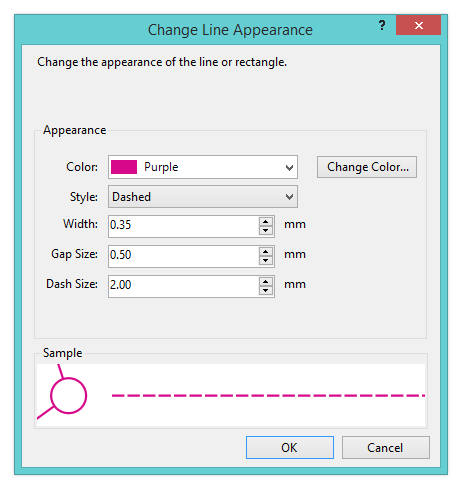

Item/Change Line Appearance...
Select the Change Line Appearance... command to change the appearance of a line or rectangle that was created with the Add Line or Add Rectangle command.

You can customize the appearance of the lines on the map as follows. A preview of the selected options appears in the "Sample" box, next to a control circle (for scale).
Color: Select the color of the line. You can select one of the predefined colors from the list. If you select "Purple", the color of the line will match the purple color used for the rest of the course (which can be set through the Customize Appearance command.)
Change Color: If you wish to select a color other than the predefined colors in the list, click this button and choose the amount of Cyan, Magenta, Yellow, and Black in the color that you want.
Style: Select the style of line: single, double, or dashed.
Corner Radius: If you enter a size greater than zero, than the corners of the rectangle will be rounded by this amount. If you leave the size as zero, the rectangle corners will be square.
Width: Enter the width of the line in mm. For a double line, this indicates the width of each of the two lines.
Gap Size: For the style "double", enter the width gap between the two halfs of the double line. For the style "dashed", enter the length of a gap between dashes.
Dash Size: For the style "dashed", enter the length of each dash.